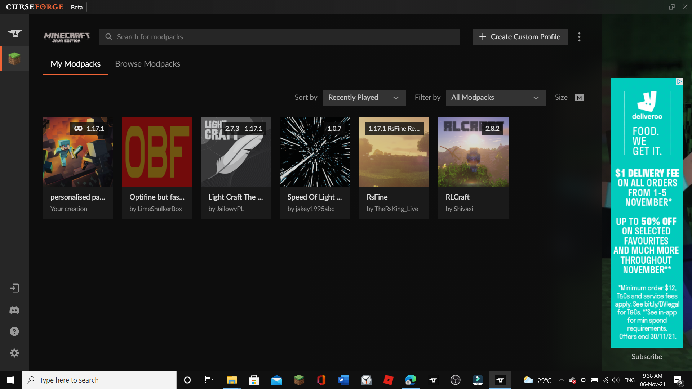
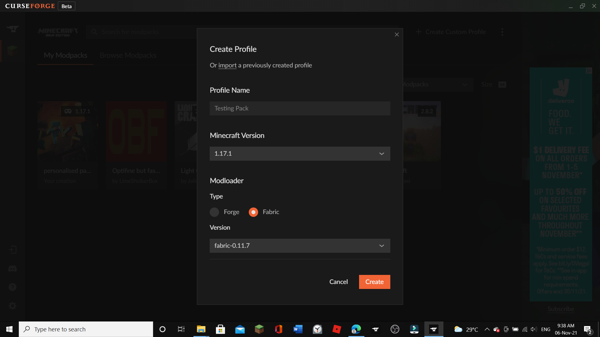
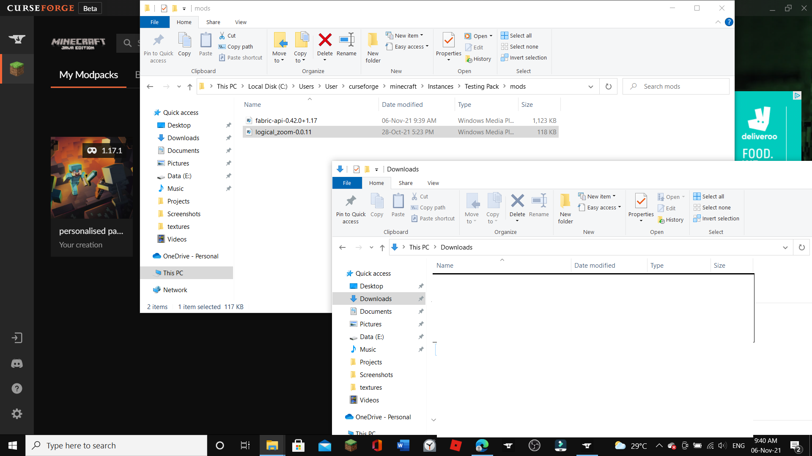

Some time you ARE going to get bored playing vanilla minecraft and want to spice things up a little. THATS where mods come in!! Mods are a great way to spice up vanilla minecraft and i will be showing you how to install and use mods using a program, called "Forge".
So what you wanna do is download forge using the link i provided. Just follow all the procedures to download it and open forge. Also remember to download overwolf as well as forge will not work without overwolf.
Now you need to go to the curseforge website and download your favourite mod. I am going to use the mod "Logical zoom" by logicalgeekboy for this.
Open the forge app in your computer. firstly, you will need to Create a custom Modpack or "Profile". Click the create custom profile button to do this.
ok, now you will need to select the forge or fabric loader. You should refer to the actual content creator for whether to use the fabric api or the forge mod loader. for this mod i have to use the fabric API to run this mod. You Also have to choose your version of the game. i will choose 1.17. remember to choose the verion of game that the modpack can run on. cause if you load a mod that is for 1.15 in 1.17, it will NOT WORK AT ALL.
now open your right click on your pack and open the profile folder. Next open the mods folder and your downloads folder and drag your desired mod into the mods folder.
Now close the folders and you are done! Click play to run the mods and it should take you to a minecraft launcher. dont do anything to the installations and hit play. There you go! You downloaded a modpack! This can probably work for other games too.